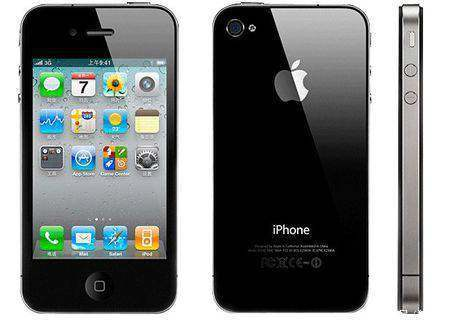
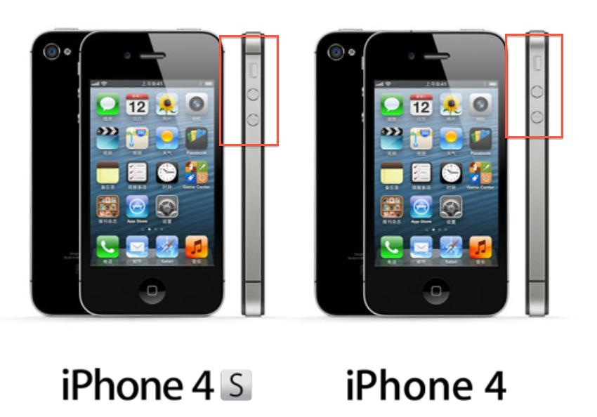

AApple's A4 processor, first used on the iPad, officially landed on the iPhone 4, but in his WWDC 2010 presentation, Jobs didn't particularly emphasize the high performance of the A4 processor, or even announce the main frequency of the A4 processor used in the iPhone 4, but highlighted the battery power consumption of the iPhone 4.
Jobs announced the iPhone 4 battery life of 7 hours of 3G calls, 10 hours of video playback, 40 hours of music playback, 300 hours of standby. With the exception of 3G calls, seven hours of talk is two hours longer than the five hours of the iPhone 3GS, and there is no significant improvement in battery life. The iPhone 4 supports UMTS/GSM/GPRS/CDMA networks, as well as dual-frequency HDPA/HSUPA3.5G base with a maximum download speed of 7.8Mbps.In addition, the iPhone 4 supports the 802.11n wireless standard. 
Compared to the iPhone 4, the iPhone 4S has not changed much in appearance, but the antenna design has changed. The iPhone 4S has been upgraded to the iPhone 4 with an A5 dual-core processor and dual-core display core, twice the CPU speed of the iPhone 4 and seven times the graphics performance of the iPhone 4. The iPhone 4S has improved battery life. The phone can talk for up to eight hours on a 3G network, six hours on the Internet, watch 10 hours of video and listen to 40 hours of music.
The iPhone 4S supports the HSDPA network and can download up to 14.4Mbps, the iPhone 4 has two versions of WCDMA/GSMCDMA2000/CDMA, and the iPhone 4S supports both GSM and CDMA. In addition, the iPhone 4S is equipped with an 8-megapixel back-lit camera with a 73% increase in light pass rate, a maximum aperture of F2.4, and can capture 3,264×2448 pixel images, combined with iOS's enhanced photography capabilities to match the average card player, while the iPhone 4 has been the most popular camera on Flickr. In addition, the iPhone 4S camera supports recording of 1080p HD video, as well as a picture stabilization system and real-time noise cancellation. 